ROMSTOOLS User's Guide
Pierrick Penven and Thi-Anh Tan
Institut de Recherche pour le Développement (IRD),
213 rue Lafayette, Paris,
France
figure=roms_gui.eps,width=11cm
July, 2007
This guide presents a series of Matlab routines which
could be useful for the pre- and post-processing of oceanic
regional ROMS simulations. This guide is just a basic
users guide, details of the methods and datasets are
described in Penven et al. (2007).
The Regional Ocean Modeling System (ROMS) is a new
generation ocean circulation model (Shchepetkin and McWilliams, 2005)
that has been specially designed for accurate simulations
of regional oceanic systems.
The reader is referred to Shchepetkin and McWilliams (2003) and to
Shchepetkin and McWilliams (2005) for a complete description of the model.
ROMS has been applied for the regional simulation of a
variety of different regions of the world oceans
(e.g. Marchesiello et al., 2003; Penven et al., 2001; MacCready et al., 2002; Haidvogel et al., 2000; Di Lorenzo et al., 2003; Blanke et al., 2002).
To perform a regional simulation using ROMS, the modeler
needs to provide several data files in a specific format:
horizontal grid, bottom topography, surface forcing,
lateral boundary conditions... He also needs to analyze
the model outputs. The tools which are described here
have been designed to perform these tasks.
The goal is to be able to build a standard
regional model configuration in a minimum time.
In the first chapter, the system requirements and the
installation process are exposed. A short note on ROMS
model is presented in chapter 2. A tutorial on the use of
ROMSTOOLS is shown in the third chapter. Tidal simulations,
inter-annual simulations, nesting tools, biology and
operational regional modeling are presented in chapter 4,
5, 6, 7 and 8.
This toolbox has been designed for Matlab. It needs at least
2 Gbites of disk space. It has been tested on several
Matlab versions ranging from Matlab6 to Matlab2006a. It has been
mostly tested on Linux workstations, but it could be used
on any platform if a NetCDF and a LoadDAP Matlab Mex files
are provided. The NetCDF Matlab Mex file is needed to read
and write into NetCDF files and it can be found at the web
location: http://mexcdf.sourceforge.net/. The LoadDAP Matlab Mex file
is used to download data from OpenDAP servers for inter-annual and forecast
simulations. It can be found at the web location:
http://www.opendap.org/download/ml-structs.html. The Matlab
LoadDAP Mex file provides a way to read any OpenDAP-accessible
data into Matlab. Note that the LibDAP library must be installed
on your system before installing LoadDAP. Details can be found
at the web location: http://www.opendap.org. MexCDF and LoadDAP mex
files are provided for Linux (system FEDORA 32bits: mexcdf and
Opendap_tools/FEDORA ; system CENTOS or FEDORA 64bits:
mexnc and Opendap_tools/FEDORA_X64), but they are not working
on all the plateforms.
All the other necessary Matlab toolboxes (i.e. air-sea, mask,
netcdf or m_map...) are included in the ROMSTOOLS package.
Global datasets, such as topography (Smith and Sandwell, 1997),
hydrography (Conkright et al., 2002) or surface fluxes (Da Silva et al., 1994), are
also included.
All the necessary compressed tar files (XXX.tar.gz) containing
the Matlab programs, several datasets and other toolboxes and
softwares needed by ROMSTOOLS are located at:
http://www.brest.ird.fr/Roms_tools/index.html
For the ROMS source code you should download ROMS_AGRIF version
V1.1.
Download all the compressed tar files. Uncompress and untar all
the files (gunzip and tar -xvf). You should obtain the following
directory tree :
Roms_tools
- Aforc_NCEP
- Aforc_QuikSCAT
- air_sea
- COADS05
- Compile
- Diagnostic_tools
- Documentation
- User_guide
- Forecast_tools
- mask
- mex60
- mexnc
- tests
- m_map
- private
- Nesting_tools
- netcdf_g77
- netcdf_ifc
- netcdf_matlab
- listpick
- ncatt
- ncbrowser
- ncdim
- ncfiles
- ncitem
- ncrec
- nctype
- ncutility
- ncvar
- netcdf
- netcdf_x86_64
- Oforc_OGCM
- Opendap_tools
- FEDORA
- FEDORA_X64
- Preprocessing_tools
- Roms_Agrif
- AGRIFZOOM
- AGRIF_FILES
- AGRIF_INC
- AGRIF_OBJS
- AGRIF_YOURFILES
- LIB.clean
- Run
- DATA
- FORECAST
- ROMS_FILES
- SCRATCH
- TEST_CASES
- SeaWifs
- SST_pathfinder
- Tides
- Topo
- Matlab
- TPX06
- TPX07
- Visualization_tools
- WOA2001
- WOA2005
Definition of the different directories :
- Aforc_NCEP : Scripts for the recovery of surface forcing data
(based on NCEP reanalysis) for inter-annual simulations.
- Aforc_QuikSCAT : Scripts for the recovery of wind stress from
satellite scatterometer data (QuickSCAT).
- COADS05 : Directory of the surface fluxes global monthly
climatology at 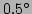 resolution (Da Silva et al., 1994).
- Compile : Empty scratch directory for ROMS compilation.
- Diagnostic_tools : A few Matlab scripts for animations and
basic statistical analysis.
- Documentation : Location of the ROMSTOOLS user guide.
- Forecast_tools : Scripts for the generation of an operational
modeling system
- mask : Land mask edition toolbox developed by A.Y. Shcherbina.
- mex60 : Matlab NetCDF interface for 32 bits Linux architectures.
- mexnc : Matlab NetCDF interface for 64 bits Linux architectures.
- m_map : The Matlab mapping toolbox
(http://www2.ocgy.ubc.ca/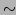rich/map.html).
- Nesting_tools : Preprocessing tools used to prepare nested
models.
- netcdf_g77 : The NetCDF Fortran library for Linux, compiled using g77
(http://www.unidata.ucar.edu/packages/netcdf/index.html).
- netcdf_ifc : The NetCDF Fortran library for Linux, compiled with ifort.
The Intel Fortran Compiler (ifort) is available at
http://www.intel.com/software/products/compilers/flin/noncom.htm.
- netcdf_matlab : The Matlab NetCDF toolbox
( http://woodshole.er.usgs.gov/staffpages/cdenham/public_html/MexCDF/nc4ml5.html).
- netcdf_x86_64 : The NetCDF Fortran library for Linux, compiled with ifort
on a 64 bits architecture.
- Oforc_OGCM : Scripts for the recovery of initial and lateral boundary
conditions from global OGCMs (SODA (Carton et al., 2005) or ECCO (Stammer et al., 1999)) for
inter-annual simulations.
- Opendap_tools : LoadDAP mexcdf and several scripts to automatically
download data over the Internet.
- Preprocessing_tools : Preprocessing Matlab scripts (make_grid.m,
make_forcing, etc...).
- Roms_Agrif : ROMS Fortran sources.
- Run : Working directory. This is where the ROMS input files
are generated and where the model is running.
- SeaWifs : surface chlorophyll-a climatology based on SeaWifs observations.
- SST_pathfinder : Directory of a higher resolution SST climatology
(Reynolds and Smith, 1994) for the thermal correction term.
- Tides : Matlab routines to prepare ROMS tidal simulations. Tidal data
are derived from the Oregon State University global models of ocean tides
TPXO6 and TPXO7 (Egbert and Erofeeva, 2002):
http://www.oce.orst.edu/research/po/research/tide/global.html.
- Topo : Location of the global topography dataset at 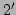 resolution
(Smith and Sandwell, 1997). Original data can be found at:
http://topex.ucsd.edu/cgi-bin/get_data.cgi
- TPX06 : Directory of the global model of ocean tides TPXO6 (Egbert and Erofeeva, 2002).
- TPX07 : Directory of the global model of ocean tides TPXO7 (Egbert and Erofeeva, 2002).
- Visualization_tools : Matlab scripts for the ROMS visualization
graphic user interface.
- WOA2001 : World Ocean Atlas 2001 global dataset
(monthly climatology at 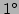 resolution) (Conkright et al., 2002).
- WOA2005 : World Ocean Atlas 2005 global dataset
- A graphic user interface could be useful for the preprocessing tools.
- There is need for an improvement of the extrapolation and interpolation
methods.
- Since Geostrophy is used to obtain the horizontal currents for
the lateral boundary conditions, this method should be applied with
care close to the Equator. An extrapolation of the currents outside
an equatorial band (2S-2N) is performed to get an
approximation of the equatorial currents.
- On extended grids, the objective analysis used for data
extrapolation can be relatively costly in memory and CPU time.
The "nearest" Matlab function that is less costly can be used instead.
If the computer starts to swap, you should think of reducing the
dimension of your model's domain.
- It is sometimes difficult to compile LoadDAP.
LibDAP must be installed before installing LoadDAP.
Here are a few instructions for the installation of these libraries:
- Download libDAP and loadDAP tar.gz version at the web location
http://www.opendap.org
- To build the libDAP library, follow these steps:
- log you as a root
- Uncompress and untar the file libdap.tar.gz (gunzip and tar -xvf)
 : cd libdap_directory
: cd libdap_directory
- Type './configure' at the prompt. Some libraries must be installed
on your system to successfully run configure and build libDAP library : libcurl
(http://curl.haxx.se/) and libxml2 (http://xmlsoft.org/).
Example:
---------------------------------------------
checking for a BSD-compatible install... /usr/bin/install -c
checking whether build environment is sane... yes
checking whether make sets (MAKE)... yes
checking build system type... i686-pc-linux-gnu
checking host system type... i686-pc-linux-gnu
checking for gawk... (cached) mawk
checking for g++... g++
checking for C++ compiler default output file name... a.out
...
config.status: dods-datatypes.h is unchanged
config.status: executing depfiles commands
---------------------------------------------
- Type 'make' to build the library.
Example :
---------------------------------------------
make[1]: Entering directory '/home/tropic/tan/soft/libdap-3.6.2'
Making all in gl
make[2]: Entering directory '/home/tropic/tan/soft/libdap-3.6.2/gl'
make all-am
make[3]: Entering directory '/home/tropic/tan/soft/libdap-3.6.2/gl'
...
---------------------------------------------
- Type 'make check' to run the tests. To pass this step you
must have DejaGNU framework (GNU FTP mirror list:
http://www.gnu.org/prep/ftp.html).
Example :
---------------------------------------------
make[1]: Entering directory `/home/tropic/tan/soft/libdap-3.6.2/gl'
dejagnu_driver.sh
...
Test Run By tan on Thu Jul 19 11:19:02 2007
Native configuration is i686-pc-linux-gnu
===== das-test tests =====
Running ...
===== das-test Summary =====
===== dds-test tests =====
Running ...
===== dds-test Summary =====
===== expr-test tests =====
Running ...
===== expr-test Summary =====
PASS: dejagnu_driver.sh
==================
All 1 tests passed
==================
make[2]: Leaving directory `/home/tropic/tan/soft/libdap-3.6.2/tests'
make[1]: Leaving directory `/home/tropic/tan/soft/libdap-3.6.2/tests'
---------------------------------------------
- Type 'make install' to install the library. By default the files are installed under
/usr/local/lib/. You can specify a different root directory using the following control :
'make install root_directory'.
- Go to the .bashrc and add
'EXPORT LD_LIBRARY_PATH=$LD_LIBRARY_PATH
: root_directory.'
- The installation of the loadDAP library is done as for libDAP.
By default the files are installed under
/usr/local/share/.
ROMS solves the primitive equations in an Earth-centered
rotating environment, based on the Boussinesq approximation and
hydrostatic vertical momentum balance. ROMS is discretized in
coastline- and terrain-following curvilinear coordinates.
ROMS is a split-explicit, free-surface ocean model, where short time steps
are used to advance the surface elevation and barotropic momentum, with a
much larger time step used for temperature, salinity, and baroclinic momentum.
ROMS employs a special 2-way time-averaging procedure for the barotropic mode,
which satisfies the 3D continuity equation (Shchepetkin and McWilliams, 2005).
The specially designed predictor-corrector time step algorithm used in ROMS
allows a substantial increase in the permissible time-step size.
ROMS has been designed to be optimized on shared memory parallel computer
architectures such as the SGI/CRAY Origin 2000. Parallelization is done
by two dimensional sub-domains partitioning. Multiple sub-domains can be
assigned to each processor in order to optimize the use of processor
cache memory. This allow super-linear scaling when performance growth even
faster than the number of CPUs.
The third-order, upstream-biased advection scheme implemented in ROMS
allows the generation of steep gradients, enhancing the effective resolution
of the solution for a given grid size (Shchepetkin and McWilliams, 1998). Explicit lateral
viscosity is null everywhere in the model domain except in sponge layers
near the open boundaries where it increases smoothly close to the lateral
open boundaries.
A non-local, K-profile planetary (KPP) boundary layer scheme (Large, 1994)
parameterizes the unresolved physical vertical subgrid-scale processes.
If a lateral boundary faces the open ocean, an active, implicit,
upstream biased, radiation condition connects the model solution
to the surroundings (Marchesiello et al., 2001).
This section presents the essential steps for preparing
and running a regional ROMS simulation. This is
done following the example of a model of the
Southern Benguela at low resolution.
Once the installation has been successful, launch a Matlab session
in the directory: /Roms_tools/Run. Run the start.m
script to set the Matlab paths for this session. The start.m script
also makes the difference between 32 bits and 64 bits Linux architectures
and adjusts the paths in consequence:
: cd Roms_tools/Run
: matlab
M A T L A B ...
start
Add the paths of the different toolboxes...
Arch : x86_64 - Matlab version : 12
Use of mex60 and loaddap in 32 bits.
You are now ready to create a new configuration.
It is important to respect the order of the following preprocessing
steps: make_grid, make_forcing, make_clim.
For all the preprocessing steps, there is only one file to edit :
/Roms_tools/Run/romstools_param.m .
This file contains the necessary parameters for the generation
of the ROMS input NetCDF files.
The first section in romstools_param.m defines the general parameters,
such as title, working directories or file names:
%%%%%%%%%%%%%%%%%%%%%%
%
% 1- General parameters
%
%%%%%%%%%%%%%%%%%%%%%%
%
% ROMS title names and directories
%
ROMS_title = 'Benguela Test Model';
ROMS_config = 'Benguela';
ROMSTOOLS_dir = '../';
RUN_dir=[ROMSTOOLS_dir,'Run/'];
ROMS_files_dir=[RUN_dir,'ROMS_FILES/'];
%
% ROMS file names (grid, forcing, bulk, climatology, initial)
%
grdname=[ROMS_files_dir,'roms_grd.nc'];
frcname=[ROMS_files_dir,'roms_frc.nc'];
blkname=[ROMS_files_dir,'roms_blk.nc'];
clmname=[ROMS_files_dir,'roms_clm.nc'];
ininame=[ROMS_files_dir,'roms_ini.nc'];
oaname =[ROMS_files_dir,'roms_oa.nc']; % oa file : intermediate file not used
% in roms simulations
bryname=[ROMS_files_dir,'roms_bry.nc'];
Zbryname=[ROMS_files_dir,'roms_bry_Z.nc'];% Zbry file: intermediate file not used
% in roms simulations
%
frc_prefix=[ROMS_files_dir,'roms_frc']; % generic bulk forcing file name
% for inter-annual roms simulations (NCEP or GFS)
blk_prefix=[ROMS_files_dir,'roms_blk']; % generic forcing file name
% for inter-annual roms simulations (NCEP or GFS)
%
% Objective analysis decorrelation scale [m]
% (if Roa=0: simple extrapolation method; crude but much less costly)
%
%Roa=300e3;
Roa=0;
%
interp_method = 'cubic'; % Interpolation method: 'linear' or 'cubic'
%
makeplot = 1; % 1: create a few graphics after each preprocessing step
%
%%%%%%%%%%%%%%%%%%%%%%%%%%%%%%%%%%%%%%
Variables description:
- title='Benguela Test Model' : General title. You can give any name
you want for your configuration.
- ROMS_config = 'Benguela' : Name of the configuration. This is used for the storage of
NCEP or OGCM data for a specific configuration.
- ROMSTOOLS_dir = '../' : "Roms_tools" directory.
- RUN_dir=[ROMSTOOLS_dir,'Run/'] : Roms_tools/Run directory. This is where all
the work is done.
- ROMS_files_dir=[RUN_dir,'ROMS_FILES/'] : Roms_tools/Run/ROMS_FILES/ directory.
This is where ROMS input NetCDF files are stored.
- grdname=[ROMS_files_dir,'roms_grd.nc'] : Name of the ROMS input NetCDF grid file.
This is where the horizontal grid parameters are stored. In general, we follow
the style : XXX_grd.nc.
- frcname=[ROMS_files_dir,'roms_frc.nc'] : : Name of the ROMS input NetCDF forcing file.
This is where the surface forcing variables (such as wind stress) are stored. In general, we
follow the style : XXX_frc.nc.
- blkname=[ROMS_files_dir,'roms_blk.nc'] : Name of the ROMS input NetCDF bulk file.
This is where the atmospheric variables used for the bulk parametrization (such as air temperature)
are stored. In general, we follow the style : XXX_blk.nc.
- clmname=[ROMS_files_dir,'roms_clm.nc'] : Name of the ROMS input NetCDF climatology file.
This is where ROMS prognostic variables (u,v, temp, salt, ubar, vbar, zeta) for lateral boundary
and interior nudging are stored. This file can be large because variables are stored for all the
ROMS grid interior points. It is called "a climatology file" because this was the file used in
the past for the restoring of the ROMS solution towards an in-situ climatology (such as Levitus
for example). In general, we follow the style : XXX_clm.nc.
- ininame=[ROMS_files_dir,'roms_ini.nc'] : Name of the ROMS input NetCDF initial file.
This is where ROMS prognostic variables (u,v, temp, salt, ubar, vbar, zeta) are stored
for the initial conditions. In general, we follow the style : XXX_ini.nc.
- oaname =[ROMS_files_dir,'roms_oa.nc'] : Name of an intermediate file which is not
used by ROMS. This is equivalent to the climatology file, but on a z vertical coordinate.
Firstly, the variables are horizontally interpolated to create a roms_oa.nc file (a OA file).
Then, they are vertically interpolated on the ROMS s-coordinate for the climatology
file. In general, we follow the style : XXX_oa.nc.
- bryname=[ROMS_files_dir,'roms_bry.nc'] : Name of the ROMS input NetCDF boundary file.
This is an alternative of the climatology file. In this case, variables are only stored for
the lateral boundaries. In general, we follow the style : XXX_bry.nc.
- Zbryname=[ROMS_files_dir,'roms_bry_Z.nc'] : Intermediate file on a z coordinate
for the boundary file. In general, we follow the style : XXX_bry_Z.nc.
- frc_prefix=[ROMS_files_dir,'roms_frc'] : First part of the forcing file names in
the case of inter_annual simulations. In this case, a separate file is created for each month.
For example, a forcing file based on NCEP for January 2000 is : roms_frc_NCEP_Y2000M1.nc
- blk_prefix=[ROMS_files_dir,'roms_blk'] : First part of the bulk file names in
the case of inter_annual simulations. In this case, a separate file is created for each month.
For example, a bulk file based on NCEP for January 2000 is : roms_blk_NCEP_Y2000M1.nc
- Roa=0 : Decorrelation length scale in meters for the objective analysis (300 km
is a reasonable value for the employed datasets). If Roa=0, the "nearest" Matlab extrapolation
method is used instead of an objective analysis. This is much less costly, but the
results might be at a lower quality.
- interp_method = 'cubic' : Horizontal interpolation method used after the objective
analysis. It can be linear or cubic.
- makeplot = 1 : Select to generate images after each step of the preprocessing.
The part of the file romstools_param.m that you should edit is :
%%%%%%%%%%%%%%%%%%%%%%
%
% 2-Grid parameters
% used by make_grid.m (and others..)
%
%%%%%%%%%%%%%%%%%%%%%%
%
% Grid dimensions:
%
lonmin = 12.3; % Minimum longitude [degree east]
lonmax = 20.45; % Maximum longitude [degree east]
latmin = -35.5; % Minimum latitude [degree north]
latmax = -26.5; % Maximum latitude [degree north]
%
% Grid resolution [degree]
%
dl = 1/3;
%
% Number of vertical Levels (! should be the same in param.h !)
%
N = 32;
%
% Vertical grid parameters (! should be the same in roms.in !)
%
theta_s = 6.;
theta_b = 0.;
hc =10.;
%
% Minimum depth at the shore [m] (depends on the resolution,
% rule of thumb: dl=1, hmin=300, dl=1/4, hmin=150, ...)
% This affect the filtering since it works on grad(h)/h.
%
hmin = 75;
%
% Maximum depth at the shore [m] (to prevent the generation
% of too big walls along the coast)
%
hmax_coast = 500;
%
% Topography netcdf file name (ETOPO 2 or any other netcdf file
% in the same format)
%
topofile = [ROMSTOOLS_dir,'Topo/etopo2.nc'];
%
% Slope parameter (r=grad(h)/h) maximum value for topography smoothing
%
rtarget = 0.25;
%
% Number of pass of a selective filter to reduce the isolated
% seamounts on the deep ocean.
%
n_filter_deep_topo=4;
%
% Number of pass of a single hanning filter at the end of the
% smoothing procedure to ensure that there is no 2DX noise in the
% topography.
%
n_filter_final=2;
%
% GSHSS user defined coastline (see m_map)
% XXX_f.mat Full resolution data
% XXX_h.mat High resolution data
% XXX_i.mat Intermediate resolution data
% XXX_l.mat Low resolution data
% XXX_c.mat Crude resolution data
%
coastfileplot = 'coastline_l.mat';
coastfilemask = 'coastline_l_mask.mat';
Variables description:
- lonmin = 12.3 : Western limit of the grid in longitude [-360, 360].
The grid is rectangular in latitude/longitude.
- lonmax = 20.45 : Eastern limit [-360, 360].
Should be superior to lonmin.
- latmin = -35.5 : Southern limit of the grid in latitude [-90, 90].
- latmax = -26.5 : Northern limit [-90, 90].
Should be superior to latmin.
- l = 1/3 : Grid longitude resolution in degrees. The latitude spacing is deduced to
obtain an isotropic grid using the relation:
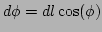.
- N = 32 : Number of vertical levels. Warning! N has to be also
defined in the file : /Roms_tools/Run/param.h before compiling
the model.
- theta_s = 6. : Vertical S-coordinate surface stretching parameter.
When building the climatology and initial ROMS files, we have to define
the vertical grid. Warning! The different vertical grid parameters should
be identical in this file and in the ROMS input file (i.e.
/Roms_tools/Run/roms.in).
This is a serious cause of bug.
The effects of theta_s, theta_b, hc, and N can be tested
using the Matlab script :
/Roms_tools/Preprocessing_tools/test_vgrid.m.
- theta_b = 0. : Vertical S-coordinate bottom stretching parameter.
- hc = 10. : Vertical S-coordinate 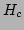 parameter. It gives approximately the
transition depth between the horizontal surface levels and the bottom terrain following
levels. It should be inferior to hmin.
- hmin = 75 : Minimum depth in meters. The model depth is cut a this level
to prevent, for example, the occurrence of model grid cells without water.
This does not influence the masking routines. At lower resolution, hmin should be
quite large (for example 150m for dl=1/2). Otherwise, since topography smoothing
is based on
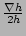, the bottom slopes can be totally eroded.
- hmax_coast = 500 : Maximum depth under the mask. It prevents selected
isobaths (here 500 m) to go under the mask. If this is the case,
this could be a source of problems
for western boundary currents (for example).
- topofile = [ROMSTOOLS_dir,'Topo/etopo2.nc'] : Default topography file.
We are using here etopo2 (Smith and Sandwell, 1997).
- rtarget = 0.25 : This variable control the maximum value of the 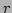-parameter
that measures the slope of the sigma layers (Beckmann and Haidvogel, 1993):
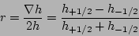
To prevent horizontal pressure gradients errors, well known in
terrain-following coordinate models (Haney, 1991), realistic topography
requires some smoothing. Empirical results have shown that reliable
model results are obtained if does not exceed 0.2.
- n_filter_deep_topo=4 : Number of pass of a Hanning filter to prevent
the occurrence of noise and isolated seamounts on deep regions.
- n_filter_final=2 : Number of pass of a Hanning filter at the end of the
smoothing process to be sure that no noise is present in the topography.
- coastfileplot = 'coastline_l.mat' : Binary GSHSS coastal file used by m_map
for graphical pruposes. The letter before ".mat" selects the coastline resolution.
f: Full resolution, h: High resolution, i: Intermediate resolution, l: Low resolution
c: Crude resolution.
- coastfilemask = 'coastline_l_mask.mat' : Binary file used
for the coastline in the masking toolbox.
Save romstools_param.m and run make_grid in the Matlab session :
make_grid
You should obtain in the Matlab session:
---------------------------------------------
Making the grid: ../Run/ROMS_FILES/roms_grd.nc
Title: Benguela Test Model
Resolution: 1/3 deg
Create the grid file...
LLm = 23
MMm = 31
Fill the grid file...
Compute the metrics...
Min dx=30.1583 km - Max dx=33.1863 km
Min dy=30.2091 km - Max dy=33.057 km
Fill the grid file...
Add topography...
ROMS resolution : 31.7 km
Topography data resolution : 3.44 km
Topography resolution halved 4 times
New topography resolution : 54.8 km
Processing coastline_l.mat ...
Do you want to use editmask ? y,[n]
Apply a filter on the Deep Ocean to remove the isolated seamounts :
4 pass of a selective filter.
Apply a selective filter on log(h) to reduce grad(h)/h :
13 iterations - rmax = 0.24879
Smooth the topography a last time to prevent 2DX noise:
2 pass of a hanning smoother.
Write it down...
Do a plot...
---------------------------------------------
You should keep the values of LLm and MMm during the process.
They will be necessary for the ROMS parameter file
/Roms_tools/Run/param.h. In this test case,
LLm0 = 23 and MMm0 = 31.
During the grid generation process, the question
"Do you want to use editmask ? y,[n]" is asked. The default answer is n (for no).
If the answer is y (for yes), editmask, the graphic interface developed
by A.Y.Shcherbina, will be launched to manually edit the mask
(Note that, for the moment, editmask is not working with matlab7 and mexnc).
Otherwise the
mask is generated from the unfiltered topography data. A procedure prevents
the existence of isolated land (or sea) points.
Figure (1) presents the
bottom topography obtained with make_grid.m for the
Southern Benguela example. Note that at this low
resolution (1/3), the topography has been strongly
smoothed.
Figure 1:
Result of make_grid.m for the Benguela example
| 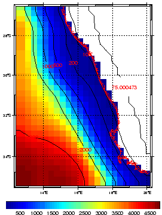 |
The next step is to create the file containing the different surface
fluxes. The part of the file romstools_param.m that you should edit is :
%
%%%%%%%%%%%%%%%%%%%%%%%%%%%
% 3-Surface forcing parameters
% used by make_forcing.m and by make_bulk.m
%
%%%%%%%%%%%%%%%%%%%%%%%%%%%
% COADS directory (for climatology runs)
%
coads_dir=[ROMSTOOLS_dir,'COADS05/'];
%
% COADS time (for climatology runs)
%
coads_time=(15:30:345); % days: middle of each month
coads_cycle=360; % repetition of a typical year of 360 days
%
%%%%%%%%%%%%%%%%%%%%%%%%%%%
%
% 3.1 Surface forcing parameters
% used by pathfinder_sst.m
%
%%%%%%%%%%%%%%%%%%%%%%%%%%%
%
pathfinder_sst_name=[ROMSTOOLS_dir,...
'SST_pathfinder/climato_pathfinder.nc'];
Variables description:
- coads_dir=[ROMSTOOLS_dir,'COADS05/'] : Directory where the global atlas of surface marine
data at 1/2 resolution (Da Silva et al., 1994) is located.
- coads_time=(15:30:345) : Time in days for the monthly climatology. It corresponds to the
middle of each month. ROMS uses this time to interpolate linearly the forcing variables in time.
- coads_cycle=360 : Duration on which the forcing variables are cycled. Here, for the sake
of simplicity, we are running the model on a repeating climatological year of 360 days.
- pathfinder_sst_name=[ROMSTOOLS_dir,SST_pathfinder/climato_pathfinder.nc'] :
Directory of the monthly climatology of sea surface temperature from Pathfinder satellite
observations (Casey and Cornillon, 1999). This can be used has an alternative of Da Silva et al. (1994) SST.
Save romstools_param.m and run make_forcing in the Matlab session :
make_forcing
You should obtain :
---------------------------------------------
Benguela Test Model
Read in the grid...
Create the forcing file...
Getting taux for time index 1
Getting tauy for time index 1
...
Make a few plots...
---------------------------------------------
This program can take a relatively long time to process all the forcing variables.
Figure (2) presents the wind stress vectors and wind stress norm
obtained from the global atlas of surface marine
data at 1/2 resolution (Da Silva et al., 1994) at 4 different periods of the year.
Da Silva et al. (1994) sea surface temperature (SST) is used for the restoring term (dQdSST)
in the heat flux calculation. To improve the model solution it is possible to
use a SST climatology at a finer resolution (9.28 km) (Casey and Cornillon, 1999). To do
so, you can run pathfinder_sst.m in the Matlab session :
pathfinder_sst
You should obtain :
---------------------------------------------
... Month index: 1
... Month index: 2
...
---------------------------------------------
For the surface forcing, instead of directly prescribing the fluxes, it is possible
to use a bulk formula to generate the surface fluxes from atmospheric variables
during the model run. In this case, ROMS needs to be recompiled with the BULK_FLUX
cpp key defined. To generate the bulk forcing file, you need to run make_bulk
in the Matlab session :
make_bulk
You should obtain :
---------------------------------------------
Benguela Test Model
Read in the grid...
Create the bulk forcing file...
Getting sat for time index 1
Getting sat for time index 2
...
Make a few plots...
---------------------------------------------
Figure 2:
Wind stress[N.m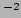] obtained using make_forcing.m for the Benguela example.
| 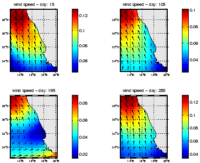 |
The last preprocessing step consists in generating the files containing
the necessary informations for the ROMS initial and lateral open boundaries
conditions.
This script generates two files : the climatology file (XXX_clm.nc) which gives
the lateral boundary conditions, and the initial conditions file (XXX_ini.nc).
The part which should be edited by the user in the file romstools_param.m is:
%%%%%%%%%%%%%%%%%%%%%%%%%%%%%%%
%
% 4-Open boundaries and initial conditions parameters
% used by make_clim.m, make_biol.m, make_bry.m
%
%%%%%%%%%%%%%%%%%%%%%%%%%%%%%%%
% Open boundaries switches (! should be consistent with cppdefs.h !)
%
obc = [1 1 1 1]; % open boundaries (1=open , [S E N W])
%
% Level of reference for geostrophy calculation
%
zref = -1000;
%
% Switches for selecting what to process in make_clim (1=ON)
% (and also in make_OGCM.m and make_OGCM_frcst.m)
makeini=1; %1: process initial data
makeclim=1; %1: process lateral boundary data
makebry=0; %1: process boundary data
%
makeoa=1; %1: process oa data (intermediate file)
makeZbry=0; %1: process data in Z coordinate
%
insitu2pot=1; %1: convert in-situ temperature into potential temperature
%
% Day of initialization for climatology experiments (=0 : 1st January 0h)
%
tini=0;
%
% World Ocean Atlas directory (WOA2001 or WOA2005)
%
woa_dir=[ROMSTOOLS_dir,'WOA2005/'];
%
% Surface chlorophyll seasonal climatology (WOA2001 or SeaWifs)
%
chla_dir=[ROMSTOOLS_dir,'SeaWifs/'];
%
% Set times and cycles for the boundary conditions:
% monthly climatology
%
woa_time=(15:30:345); % days: middle of each month
woa_cycle=360; % repetition of a typical year of 360 days
%
Variables description:
- obc=[1 1 1 1] : Switches to open (1=open) or close (0=wall) the lateral
boundaries [South East North West]. This is used for the application of mass
enforcement. Be aware, this should be compatible with the open boundary
CPP-switches in the file /Roms_tools/Run/cppdefs.h.
- zref=-1000 : Depth [meters] of the level of no motion for the geostrophic
velocities calculation.
- makeini=1 : Switch to define if the initial file (roms_ini.nc) is generated.
Should be 1.
- makeclim=1 : Switch to define if the climatology
(lateral boundary conditions) file (roms_clm.nc) is generated. Should be 1.
- makeoa=1 : Switch to define if the OA (objective analysis; roms_oa.nc)
file is generated. This should be 1. The OA files are intermediate files
where hydrographic data are stored on a ROMS horizontal grid but on
a z vertical grid. The transformation into S-coordinate is done later.
This file is not used by ROMS.
- makebry=1 : Switch to define if the boundary file (roms_bry.nc) is generated.
Used only with make_bry.
- makeZbry=1 :Switch to define if the boundary intermediate file on a z coordinate
(roms_bry_Z.nc) is generated. Used only with make_bry.
- insitu2pot=1 : Switch defined if it is in-situ temperature that is provided.
In this case, in-situ temperature is converted into potential temperature.
- tini=0 : Day of initialization in climatology experiments (15 = January 15).
- woa_dir=[ROMSTOOLS_dir,'WOA2005/'] : Directory where the World Ocean
Atlas 2005 climatology (Conkright et al., 2002) is located. The World Ocean
Atlas 2001 climatology can also be used.
- chla_dir=[ROMSTOOLS_dir,'SeaWifs/'] : Directory of the surface
chlorophyll seasonal climatology.
- woa_time=(15:30:345) : Time in days for the WOA monthly climatology.
It corresponds to the middle of each month. ROMS uses this variable to
interpolate linearly the climatology variables in time.
- woa_cycle=360 : Duration on which the climatology variables are cycled.
Here, for the sake of simplicity, we are running the model on a repeating climatological
year of 360 days.
Save romstools_param.m and run make_clim in the Matlab session :
make_clim
You should obtain :
---------------------------------------------
Making the clim: ../Run/ROMS_FILES/roms_clm.nc
Title: Benguela Test Model
Read in the grid...
Create the climatology file...
Creating the file : ../Run/ROMS_FILES/roms_clm.nc
...
Make a few plots...
---------------------------------------------
This program can also take quite a long time to run.
Figure (3) presents 4 different sections
of temperature for the initial condition file for the
Benguela example. The sections are in the X-direction (East-West),
the first section is for the Southern part of the domain and the last one
is for the Northern part of the domain.
Figure 3:
Result of make_clim.m for the Benguela example
| 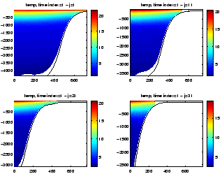 |
An alternative of using a climatology file is to create a boundary
file. In this case, only boundary values are stored. The cpp key
FRC_BRY should be defined and ROMS recompiled. Run make_bry in
the Matlab session :
make_bry
You should obtain :
---------------------------------------------
Making the file: ../Run/ROMS_FILES/roms_bry.nc
Title: Benguela Test Model
Read in the grid...
...
---------------------------------------------
Once all the netcdf data files are ready (i.e. XXX_grd.nc,
XXX_frc.nc, XXX_ini.nc, and XXX_clm.nc), we can
prepare ROMS for compilation. All is done in the
/Roms_tools/Run/ directory.
Edit the file
/Roms_tools/Run/param.h.
The line which needs to be changed is:
# elif defined BENGUELA
parameter (LLm0=23, MMm0=31, N=32) ! Southern Benguela Test Case
# else
These are the values of the model grid size: LLm0 points in the X
direction, MMm0 points in the Y direction and N vertical levels.
LLm0 and MMm0 are given by running make_grid.m, and N is
defined in romstools_param.m.
The second file to edit is /Roms_tools/Run/cppdefs.h.
This file defines the CPP keys that are used by the
the C-preprocessor when compiling ROMS. The C-preprocessor selects the different
parts of the Fortran code which needs to be compiled depending on the defined CPP
options. These options are separated in two parts (the basic option keys and
the advanced options keys) in cppdefs.h.
Definitions of the CCP keys in cppdefs.h:
- BASIN : Must be defined for running the Basin Example.
- CANYON_A : Must be defined for running the Canyon_A Example.
- CANYON_B : Must be defined for running the Canyon_B Example.
- GRAV_ADJ : Must be defined for running the Gravitational Adjustment Example.
- INNERSHELF : Must be defined for running the Inner Shelf Example.
- OVERFLOW : Must be defined for running the Gravitational/Overflow Example.
- SEAMOUNT : Must be defined for running the Seamount Example.
- SHELFRONT : Must be defined for running the Shelf Front Example.
- SOLITON : Must be defined for running the Equatorial Rossby Wave Example.
- UPWELLING : Must be defined for running the Upwelling Example.
- VORTEX : Must be defined for running the Baroclinic Vortex Example
- REGIONAL : Must be defined if running realistic regional simulations.
-------------
BASIC OPTIONS
-------------
/* Configuration Name */
- BENGUELA : Configuration Name, this is used in param.h.
/* Parallelization */
- OPENMP : Activate the Open-MP parallelization protocol.
- MPI : Activate the MPI parallelization protocol.
/* Embedding */
- AGRIF : Activate the nesting capabilities
/* Open Boundary Conditions */
- TIDES : Force tidal currents at the lateral boundaries.
- OBC_EAST : Open eastern boundary (should be consistent with make_clim.m).
- OBC_WEST : Open western boundary (should be consistent with make_clim.m).
- OBC_NORTH : Open northern boundary (should be consistent with make_clim.m).
- OBC_SOUTH : Open southern boundary (should be consistent with make_clim.m).
/* Embedding conditions */
- AGRIF_OBC_EAST : Open eastern boundary for the child grids.
- AGRIF_OBC_WEST : Open western boundary for the child grids.
- AGRIF_OBC_NORTH : Open northern boundary for the child grids.
- AGRIF_OBC_SOUTH : Open southern boundary for the child grids.
/* Applications */
- BIOLOGY : Activate the biogeochemical module.
- FLOATS : Activate floats.
- STATIONS : Store model outputs for each time step at different station locations.
- PASSIVE_TRACER : Add a passive tracer.
- SEDIMENT : Activate the sediment module.
- BBL : Activate the bottom boundary layer module.
----------------------
MORE ADVANCED OPTIONS
----------------------
/* Model dynamics */
- SOLVE3D : Define if solving 3D primitive equations.
- UV_COR : Activate Coriolis terms.
- UV_ADV : Activate advection terms.
- SSH_TIDES : Define for processing sea surface elevation tidal data at the model boundaries.
- UV_TIDES : Define for processing ocean current tidal data at the model boundaries.
- TIDERAMP : Apply a ramping of the tidal current, (in general 2 days) at initialization.
Warning! This should be off when restarting the model.
/* Grid configuration */
- CURVGRID : Activate curvilinear coordinate grid option.
- SPHERICAL : Activate longitude/latitude grid positioning.
- MASKING : Activate land masking in the domain.
/* Input/Output and Diagnostics */
- AVERAGES : Define if writing out time-averaged data.
- AVERAGES_K : Define if writing out time-averaged vertical mixing.
- DIAGNOSTICS_TS : Define if writing out tendency terms for the tracer equations.
- DIAGNOSTICS_UV : Define if writing out tendency terms for the momentum equations.
/* Equation of State */
- SALINITY : Define if using salinity.
- NONLIN_EOS : Activate the nonlinear equation of state.
- SPLIT_EOS : Activate the split of the nonlinear equation of state in a
adiabatic part and a compressible part for the reduction of pressure gradient errors
(Shchepetkin and McWilliams, 2003).
/* Surface Forcing */
- QCORRECTION : Activate net heat flux correction.
- SFLX_CORR : Activate freshwater flux correction.
- DIURNAL_SRFLUX : Activate diurnal modulation of the short wave radiation flux.
- BULK_FLUX : Activate the bulk parametrization.
- BULK_EP: Activate the bulk parametrization for salinity fluxes.
/* Lateral Forcing */
- SPONGE : Activate areas of enhanced viscosity/diffusion close to the
lateral open boundaries.
- CLIMATOLOGY : Activate processing of climatology data.
- ZCLIMATOLOGY : Activate processing of sea surface height climatology.
- M2CLIMATOLOGY : Activate processing of barotropic velocities climatology.
- M3CLIMATOLOGY: Activate processing of baroclinic velocities climatology.
- TCLIMATOLOGY : Activate processing of tracer climatology.
- ZNUDGING : Activate open boundary passive/active term + nudging layer for zeta.
- M2NUDGING : Activate open boundary passive/active term + nudging layer for ubar and vbar.
- M3NUDGING : Activate open boundary passive/active term + nudging layer for u and v.
- TNUDGING : Activate open boundary passive/active term + nudging layer for tracers.
- ROBUST_DIAG : Activate strong tracer nudging in the interior for diagnostic simulations.
- FRC_BRY : Activate direct boundary forcing (roms_bry.nc).
- Z_FRC_BRY : Activate boundary forcing for zeta.
- M2_FRC_BRY : Activate boundary forcing for ubar and vbar.
- M3_FRC_BRY : Activate boundary forcing for u and v.
- T_FRC_BRY : Activate boundary forcing for tracers.
/* Bottom Forcing */
- ANA_BSFLUX : Define if using analytical bottom salinity flux.
- ANA_BTFLUX : Define if using analytical bottom temperature flux.
/* Point Sources - Rivers */
- PSOURCE : Define if using point sources (rivers).
- ANA_PSOURCE : Define if using analytical vertical profiles for the point sources
(using fluxes defined in roms.in).
/* Lateral Mixing */
- UV_VIS2 : Activate Laplacian horizontal mixing of momentum.
- MIX_GP_UV : Activate mixing on geopotential (constant Z) surfaces.
- SMAGORINSKY : Activate Smagorinsky parametrization for horizontal mixing.
- TS_DIF2: Activate Laplacian horizontal mixing of tracers.
- MIX_GP_TS : Activate mixing on geopotential (constant Z) surfaces.
- CLIMAT_TS_MIXH : Activate horizontal mixing of T-Tclim instead of T for the tracers.
/* Vertical Mixing */
- BODYFORCE : Define if applying surface and bottom stresses as bodyforces.
- BVF_MIXING : Activate a simple mixing scheme based on the Brunt-Väisälä frequency.
- LMD_MIXING : Activate Large/McWilliams/Doney mixing (LMD-KPP closure).
- LMD_SKPP : Activate surface boundary layer KPP mixing (LMD-KPP closure).
- LMD_BKPP : Activate bottom boundary layer KPP mixing (LMD-KPP closure).
- LMD_RIMIX : Activate shear instability interior mixing (LMD-KPP closure).
- LMD_CONVEC : Activate convection interior mixing (LMD-KPP closure).
- LMD_DDMIX : Activate double diffusion interior mixing (LMD-KPP closure).
- LMD_NONLOCAL : Activate nonlocal transport (LMD-KPP closure).
/* Open Boundary Conditions */
- OBC_M2FLATHER : Activate Flather open boundary conditions for ubar and vbar.
- OBC_M2CHARACT : Activate open boundary conditions based on characteristic methods
for ubar and vbar.
- OBC_VOLCONS : Activate mass conservation enforcement at open boundaries.
- OBC_M2ORLANSKI : Activate 2D radiation open boundary conditions for ubar and vbar.
- OBC_M2SPECIFIED : Activate specified open boundary conditions for ubar and vbar.
- OBC_M3ORLANSKI : Activate 2D radiation open boundary conditions for u and v.
- OBC_M3CHARACT : Activate open boundary conditions based on characteristic methods
for u and v.
- OBC_M3SPECIFIED : Activate specified open boundary conditions for u and v.
- OBC_TORLANSKI : Activate 2D radiation open boundary conditions for tracers.
- OBC_TUPWIND : Activate upwind open boundary conditions for tracers.
- OBC_TSPECIFIED : Activate specified open boundary conditions for tracers.
/* Embedding conditions */
- AGRIF_STORE_BAROT_CHILD : Store ubar and vbar during the parent step for the
child boundary conditions (Nesting).
- AGRIF_FLUX_BC : Apply parent/child barotropic boundary conditions as
fluxes (Nesting).
- AGRIF_POLY_DUAVG : Apply a third order polynomial temporal interpolation
for parent/child coupling of DU_avg1 and DU_avg2 (Nesting).
- AGRIF_LOCAL_VOLCONS : Enforce parent-child mass conservation (Nesting).
- AGRIF_OBC_M2FLATHER : Activate Flather open boundary conditions for ubar and vbar
for the child model (Nesting).
- AGRIF_OBC_M2ORLANSKI : Activate 2D radiation open boundary conditions for ubar and vbar
for the child model (Nesting).
- AGRIF_OBC_M2SPECIFIED : Activate specified open boundary conditions for ubar and vbar
for the child model (Nesting).
- AGRIF_OBC_M2CHARACT : Activate open boundary conditions based on characteristic methods
for ubar and vbar
for the child model (Nesting).
- AGRIF_OBC_M3ORLANSKI : Activate 2D radiation open boundary conditions for u and v
for the child model (Nesting).
- AGRIF_OBC_M3SPECIFIED : Activate specified open boundary conditions for u and v
for the child model (Nesting).
- AGRIF_OBC_M3CHARACT : Activate open boundary conditions based on characteristic methods
for u and v
for the child model (Nesting).
- AGRIF_OBC_TORLANSKI : Activate 2D radiation open boundary conditions for tracers
for the child model (Nesting).
- AGRIF_OBC_TUPWIND : Activate upwind open boundary conditions for tracers
for the child model (Nesting).
- AGRIF_OBC_TSPECIFIED : Activate specified open boundary conditions for tracers
for the child model (Nesting).
/* Applications */
/* Biology */
- BIO_NChlPZD : Select a 5 components (Nitrate, Chlorophyll, Phytoplankton, Zooplankton,
Detritus) biogeochemical model.
- BIO_N2ChlPZD2 : Select a 7 components (Nitrate, Ammonium, Chlorophyll, Phytoplankton, Zooplankton,
Small Detritus, Large Detritus) biogeochemical model.
- BIO_N2P2Z2D2 : Select a 8 components (Nitrate, Ammonium, Small Phytoplankton, Large Phytoplankton,
Small Zooplankton, Large Zooplankton,
Small Detritus, Large Detritus) biogeochemical model.
- DIAGNOSTICS_BIO : Define if writing out fluxes between the biological components.
/* Floats */
- FLOATS_GLOBAL_ATTRIBUTES : Write out global attributes for the floats.
- IBM : Add a fish behavior to the floats (Individual Based Model).
- RANDOM_WALK : Add a random walk for the floats dispersion.
- DIEL_MIGRATION : Add a vertical daily migration to the floats.
- RANDOM_VERTICAL : Add a random walk for the floats depending on the vertical mixing.
/* Stations */
- ALL_SIGMA : Write out all vertical levels in the stations file.
ROMS can be compiled by running the UNIX tcsh script /Roms_tools/Run/jobcomp.
Jobcomp should be able to recognize your system. It has been tested on
Linux, IBM, Sun and Compaq systems. On Linux PCs, the default compiler is the GNU g77,
but it is possible to uncomment specific lines in jobcomp to use g95 or ifort.
The latter is mandatory when using AGRIF and/or OPEN_MP.
When changing the compiler you should provide a corresponding NetCDF library.
Once the compilation is done, you should obtain a new
executable (roms) in the /Roms_tools/Run directory.
ROMS should be recompiled each time param.h or cppdefs.h are changed.
Edit the input parameter file: /Roms_tools/Run/roms.in.
The vertical grid parameters (THETA_S, THETA_B, HC)
should be identical to the ones in romstools_param.m.
Otherwise, the other default values should not be changed.
The definition of all the input variables is given at the start of each ROMS
simulation.
To run the model, type in directory /Roms_tools/Run/ : ./roms roms.in.
On the screen, you should check the Cu_max parameter: if it is greater than
1 you are violating the CFL criterion. In this case, you should reduce the
time step.
Example of model run:
: ./roms roms.in
You should obtain :
---------------------------------------------
Southern Benguela
480 ntimes Total number of timesteps for 3D equations.
5400.00 dt Timestep [sec] for 3D equations
60 ndtfast Number of 2D timesteps within each 3D step.
1 ninfo Number of timesteps between runtime diagnostics.
6.000E+00 theta_s S-coordinate surface control parameter.
0.000E+00 theta_b S-coordinate bottom control parameter.
1.000E+01 Tcline S-coordinate surface/bottom layer width used in
vertical coordinate stretching, meters.
Grid File: ROMS_FILES/roms_grd.nc
Forcing Data File: ROMS_FILES/roms_frc.nc
Bulk Data File: ROMS_FILES/roms_blk.nc
Climatology File: ROMS_FILES/roms_clm.nc
Initial State File: ROMS_FILES/roms_ini.nc Record: 1
Restart File: ROMS_FILES/roms_rst.nc nrst = 480 rec/file: -1
History File: ROMS_FILES/roms_his.nc Create new: T nwrt = 480 rec/file = 0
1 ntsavg Starting timestep for the accumulation of output
time-averaged data.
48 navg Number of timesteps between writing of time-averaged
data into averages file.
Averages File: ROMS_FILES/roms_avg.nc rec/file = 0
Fields to be saved in history file: (T/F)
T write zeta free-surface.
F write UBAR 2D U-momentum component.
F write VBAR 2D V-momentum component.
F write U 3D U-momentum component.
F write V 3D V-momentum component.
F write T(1) Tracer of index 1.
F write T(2) Tracer of index 2.
F write RHO Density anomaly.
F write Omega Omega vertical velocity.
F write W True vertical velocity.
F write Akv Vertical viscosity.
F write Akt Vertical diffusivity for temperature.
F write Aks Vertical diffusivity for salinity.
F write Hbl Depth of KPP-model boundary layer.
F write Bostr Bottom Stress.
Fields to be saved in averages file: (T/F)
T write zeta free-surface.
T write UBAR 2D U-momentum component.
T write VBAR 2D V-momentum component.
T write U 3D U-momentum component.
T write V 3D V-momentum component.
T write T(1) Tracer of index 1.
T write T(2) Tracer of index 2.
F write RHO Density anomaly
T write Omega Omega vertical velocity.
T write W True vertical velocity.
F write Akv Vertical viscosity
T write Akt Vertical diffusivity for temperature.
F write Aks Vertical diffusivity for salinity.
T write Hbl Depth of KPP-model boundary layer
T write Bostr Bottom Stress.
1025.0000 rho0 Boussinesq approximation mean density, kg/m3.
0.000E+00 visc2 Horizontal Laplacian mixing coefficient [m2/s]
for momentum.
0.000E+00 tnu2(1) Horizontal Laplacian mixing coefficient (m2/s)
for tracer 1.
0.000E+00 tnu2(2) Horizontal Laplacian mixing coefficient (m2/s)
for tracer 2.
0.000E+00 rdrg Linear bottom drag coefficient (m/si).
0.000E+00 rdrg2 Quadratic bottom drag coefficient.
1.000E-02 Zob Bottom roughness for logarithmic law (m).
1.000E-04 Cdb_min Minimum bottom drag coefficient.
1.000E-01 Cdb_max Maximum bottom drag coefficient.
1.00 gamma2 Slipperiness parameter: free-slip +1, or no-slip -1.
1.00E+05 x_sponge Thickness of sponge and/or nudging layer (m)
800.00 v_sponge Viscosity in sponge layer (m2/s)
1.157E-05 tauT_in Nudging coefficients [sec-1]
3.215E-08 tauT_out Nudging coefficients [sec-1]
1.157E-06 tauM_in Nudging coefficients [sec-1]
3.215E-08 tauM_out Nudging coefficients [sec-1]
Activated C-preprocessing Options:
REGIONAL
BENGUELA
OBC_EAST
OBC_WEST
OBC_NORTH
OBC_SOUTH
SOLVE3D
UV_COR
UV_ADV
CURVGRID
SPHERICAL
MASKING
AVERAGES
AVERAGES_K
SALINITY
NONLIN_EOS
SPLIT_EOS
BULK_FLUX
BULK_EP
SPONGE
CLIMATOLOGY
ZCLIMATOLOGY
M2CLIMATOLOGY
M3CLIMATOLOGY
TCLIMATOLOGY
ZNUDGING
M2NUDGING
M3NUDGING
TNUDGING
ANA_BSFLUX
ANA_BTFLUX
UV_VIS2
MIX_GP_UV
TS_DIF2
MIX_GP_TS
CLIMAT_TS_MIXH
LMD_MIXING
LMD_SKPP
LMD_BKPP
LMD_RIMIX
LMD_CONVEC
OBC_M2FLATHER
OBC_M3ORLANSKI
OBC_TORLANSKI
M2FILTER_COSINE
Linux 2.6.9-42.0.3.ELsmp x86_64
NUMBER OF THREADS: 1 BLOCKING: 1 x 1.
Spherical grid detected.
hmin hmax grdmin grdmax Cu_min Cu_max
75.000000 4803.032721 .301836927E+05 .331215714E+05 0.12176008 0.91533005
volume=9.523986093261087500000E+14 open_cross=6.104836888312444686890E+09
Vertical S-coordinate System:
level S-coord Cs-curve at_hmin over_slope at_hmax
32 0.0000000 0.0000000 0.000 0.000 0.000
31 -0.0312500 -0.0009350 -0.373 -2.584 -4.794
30 -0.0625000 -0.0019030 -0.749 -5.247 -9.746
29 -0.0937500 -0.0029380 -1.128 -8.074 -15.019
28 -0.1250000 -0.0040767 -1.515 -11.152 -20.790
27 -0.1562500 -0.0053591 -1.911 -14.580 -27.249
26 -0.1875000 -0.0068304 -2.319 -18.466 -34.613
25 -0.2187500 -0.0085426 -2.743 -22.938 -43.132
24 -0.2500000 -0.0105560 -3.186 -28.141 -53.095
23 -0.2812500 -0.0129416 -3.654 -34.248 -64.842
22 -0.3125000 -0.0157835 -4.151 -41.463 -78.776
21 -0.3437500 -0.0191819 -4.684 -50.031 -95.377
20 -0.3750000 -0.0232566 -5.262 -60.241 -115.220
19 -0.4062500 -0.0281514 -5.892 -72.443 -138.993
18 -0.4375000 -0.0340388 -6.588 -87.056 -167.524
17 -0.4687500 -0.0411263 -7.361 -104.584 -201.807
16 -0.5000000 -0.0496640 -8.228 -125.635 -243.041
15 -0.5312500 -0.0599527 -9.209 -150.939 -292.668
14 -0.5625000 -0.0723554 -10.328 -181.377 -352.427
13 -0.5937500 -0.0873092 -11.613 -218.013 -424.414
12 -0.6250000 -0.1053416 -13.097 -262.126 -511.156
11 -0.6562500 -0.1270882 -14.823 -315.262 -615.700
10 -0.6875000 -0.1533158 -16.841 -379.282 -741.723
9 -0.7187500 -0.1849493 -19.209 -456.432 -893.656
8 -0.7500000 -0.2231040 -22.002 -549.423 -1076.845
7 -0.7812500 -0.2691252 -25.306 -661.522 -1297.738
6 -0.8125000 -0.3246355 -29.226 -796.670 -1564.114
5 -0.8437500 -0.3915923 -33.891 -959.622 -1885.352
4 -0.8750000 -0.4723564 -39.453 -1156.112 -2272.770
3 -0.9062500 -0.5697755 -46.098 -1393.057 -2740.015
2 -0.9375000 -0.6872846 -54.048 -1678.800 -3303.552
1 -0.9687500 -0.8290268 -63.574 -2023.407 -3983.240
0 -1.0000000 -1.0000000 -75.000 -2439.016 -4803.033
Time splitting: ndtfast = 60 nfast = 89
Maximum grid stiffness ratios: rx0 =0.2353349875 rx1 = 2.5672736953
GET_INITIAL - Processing data for time = 0.000 record = 1
GET_TCLIMA - Read climatology of tracer 1 for time = 345.0
GET_TCLIMA - Read climatology of tracer 1 for time = 15.00
GET_TCLIMA - Read climatology of tracer 2 for time = 345.0
GET_TCLIMA - Read climatology of tracer 2 for time = 15.00
GET_UCLIMA - Read momentum climatology for time = 345.0
GET_UCLIMA - Read momentum climatology for time = 15.00
GET_SSH - Read SSH climatology for time = 345.0
GET_SSH - Read SSH climatology for time = 15.00
GET_SMFLUX - Read surface momentum stresses for time = 345.0
GET_SMFLUX - Read surface momentum stresses for time = 15.00
GET_BULK - Read fields for bulk formula for time = 345.0
GET_BULK - Read fields for bulk formula for time = 15.00
DEF_HIS/AVG - Created new netCDF file 'ROMS_FILES/roms_his.nc'.
WRT_GRID - wrote grid data into file 'ROMS_FILES/roms_his.nc'.
WRT_HIS - wrote history fields into time record = 1 / 1
MAIN: started time-steping.
STEP time[DAYS] KINETIC_ENRG POTEN_ENRG TOTAL_ENRG NET_VOLUME trd
0 0.00000 0.000000000E+00 2.1475858E+01 2.1475858E+01 9.5239861E+14 0
1 0.06250 1.306369099E-04 2.1476230E+01 2.1476361E+01 9.5239208E+14 0
...
---------------------------------------------
In many studies, there is a need for long simulations: to reach the spin-up of
the solution and/or to obtain statistical equilibriums.
For regional models, 10 years appears to be a reasonable model simulation length.
In this case, to prevent the generation of large output files, the strategy
is to relaunch the model every simulated month.
This is done by the UNIX csh script: run_roms.csh .
Warning! the ROMS input file use for long simulations is roms_inter.in.
It should be edited accordingly.
- It gets the grid, the forcing, the initial and the boundary files.
- It runs the model for 1 month.
- It stores the output files in a specific form: roms_avg_Y4M3.nc (for the ROMS
averaged output of March of year 4).
- It replaces the initial file by the restart file (roms_rst.nc) which as
been generated at the end of the month.
- It relaunch the model for next month.
Part to edit in run_roms.csh:
set MODEL=roms
set SCRATCHDIR=`pwd`/SCRATCH
set INPUTDIR=`pwd`
set MSSDIR=`pwd`/ROMS_FILES
set MSSOUT=`pwd`/ROMS_FILES
set CODFILE=roms
set AGRIF_FILE=AGRIF_FixedGrids.in
#
# Model time step [seconds]
#
set DT=5400
#
# Number of days per month
#
set NDAYS = 30
#
# number total of grid levels
#
set NLEVEL=1
#
# Time Schedule - TIME_SCHED=0 - yearly files
# TIME_SCHED=1 - monthly files
#
set TIME_SCHED=1
#
set NY_START=1
set NY_END=10
set NM_START=1
set NM_END=12
Variables definitions:
- MODEL=roms : Name used for the input files. For example roms_grd.nc.
- SCRATCHDIR=`pwd`/SCRATCH : Scratch directory where the model is run
- INPUTDIR=`pwd` : Input directory where the roms_inter.in input file
is.
- MSSDIR=`pwd`/ROMS_FILES : Directory where the roms input NetCDF files
(roms_grd.nc, roms_frc.nc, ...) are stored.
- MSSOUT=`pwd`/ROMS_FILES : Directory where the roms output NetCDF files
(roms_his.nc, roms_avg.nc, ...) are stored.
- CODFILE=roms : ROMS executable.
- AGRIF_FILE=AGRIF_FixedGrids.in : AGRIF input file which defines the
position of child grids when using embedding.
- DT=5400 : Model time step in seconds.
- NDAYS = 30 : Number of days in 1 month.
- NLEVEL=1 : Total number of model grids (no AGRIF: NLEVEL=1).
- NY_START=1 : Starting year.
- NY_END=10 : Ending Year.
- NM_START=1 : Starting month.
- NM_END=12 : Ending month.
To run a ROMS long simulation in batch mode on a Linux workstation:
: nohup ./run_roms.csh exp1.out &
To check the execution of your model, type in the directory
/Roms_Tools/Run :
: more exp1.out
Once the model has run, or during the simulation, it is possible
to visualize the model outputs using a Matlab graphic user interface :
roms_gui. Launch roms_gui in the Matlab session
(in the /Roms_tools/Run/ directory):
roms_gui
A window pops up, asking for a ROMS history NetCDF file (Figure 4).
You should select roms_his.nc (history file) or roms_avg.nc (average file) and
click "open".
Figure 4:
Entrance window of roms_gui
| 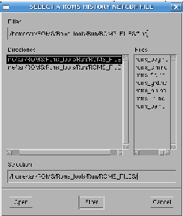 |
The main window appears, variables can be selected to obtain an image such as
Figure (5). On the left side, the upper box gives the available
ROMS variable names and the lower box presents the variables derived from the
ROMS model outputs :
- Ke : Horizontal slice of kinetic energy: 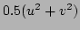.
- Rho : Horizontal slice of density using the non-linear equation of state
for seawater of Jackett and McDougall (1995).
- Pot_Rho : Horizontal slice of the potential density.
- Bvf : Horizontal slice of the Brunt-Väisäla frequency:

- Vort : Horizontal slice of vorticity:
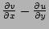.
- Pot_vort : Horizontal slice of the vertical component of Ertel's potential vorticity:
![$\frac{\partial \lambda}{\partial z} \left [ f +
\left (\frac{\partial v}{\partial x}-\frac{\partial u}{\partial y}\right ) \right ]$](img25.png) .
In our case, 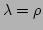.
.
In our case, 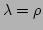.
- Psi : Horizontal slice of stream function:
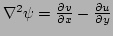.
This routine might be costly since it inverses the Laplacian of the vorticity
(using a successive over relaxation solver).
- Speed : Horizontal slice of the ocean currents velocity :
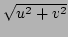.
- Transport : Horizontal slice of the transport stream function :
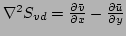.
- Okubo : Horizontal slice of the Okubo-Weiss parameter :
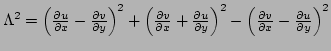.
- Chla : Compute a chlorophyll-a from Large and Small phytoplankton concentrations.
- z_SST_1C : Depth of 1C below SST.
- z_rho_1.25 : Depth of 1.25 kg.m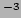 below surface density.
- z_max_bvf : Depth of the maximum of the Brunt-Väisäla frequency.
- z_max_dtdz : Depth of the maximum vertical temperature gradient.
- z_20C : Depth of the 20C isotherm.
- z_15C : Depth of the 15C isotherm.
- z_sig27 : Depth of the 1027 kg.m density layer.
- r_factor :
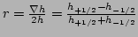
It is possible to add arrows for the horizontal currents by increasing the "Current vectors
spatial step". It is also possible to obtain vertical sections, time series, vertical profiles
and Hovmüller diagrams by clicking on the corresponding targets in roms_gui.
To analyze the long simulations,
a few scripts have been added in the directory:
/Roms_tools/Diagnostic_tools:
- roms_diags.m : Get volume and surface averaged quantities from a ROMS simulation.
- plot_diags.m : Plot the averaged quantities computed by roms_diags.m.
- get_Mmean.m : Get the monthly mean climatology.
- get_Smean.m : Get the seasonal and annual mean climatology from the outputs of
get_Mmean.m.
- get_Meddy.m : Get the monthly variance climatology (if the variable nonseannal = 1,
the non-seasonal variance is computed; i.e., the seasonal variation are
filtered). It needs that get_Mmean.m and get_Smean.m are run before.
- get_Seddy.m : Get the seasonal and annual RMS from the results of
get_Meddy.m.
- roms_anim.m : Create an animation from the monthly history or average files.
Run these scripts in a Matlab session.
The obtained mean or eddy files can be visualized with roms_gui.
If you need to create and play ".fli" animations, you should install ppm2fli
and xanim on your system. If you have a Linux PC, you can follow these steps:
- log in as root
- go to the directory where the file is saved.
- type : rpm -Uvh ppm2fli-2.1-1.i386.rpm
- type : rpm -Uvh xanim-2.80.1-12.i386.rpm
- log out
If you are not using a Linux PC, you should ask your
system administrator to install these programs.
Using the method described by Flather (1976), ROMS is able to propagate the
different tidal constituents from its lateral boundaries. To do so, define
the cpp keys TIDES, SSH_TIDES and UV_TIDES and recompile the model
using jobcomp. To work correctly, the model should use the Flather (1976)
open boundary radiation scheme (cpp key OBC_M2FLATHER defined).
The tidal components are added to the forcing file (XXX_frc.nc)
by the Matlab program make_tides.m.
Edit the file : /Roms_tools/Run/romstools_param.m.
The part of the file that you should change is :
%%%%%%%%%%%%%%%%%%%%%
%
% 5-Parameters for tidal forcing
%
%%%%%%%%%%%%%%%%%%%%%
%
% TPXO file name (TPXO6 or TPXO7)
%
tidename=[ROMSTOOLS_dir,'TPXO6/TPXO6.nc'];
%
% Number of tides component to process
%
Ntides=10;
%
% Chose order from the rank in the TPXO file :
% "M2 S2 N2 K2 K1 O1 P1 Q1 Mf Mm"
% " 1 2 3 4 5 6 7 8 9 10"
%
tidalrank=[1 2 3 4 5 6 7 8 9 10];
%
% Compare with tidegauge observations
%
lon0=18.37;
lat0=-33.91; % Cape Town location
Z0=1; % Mean depth of the tidegauge in Cape Town
Variables definitions :
- tidename=[ROMSTOOLS_dir,'TPXO6/TPXO6.nc'] : Location of the netcdf tidal dataset.
This file is derived from the Oregon State University global model of ocean tides TPXO.6
(Egbert and Erofeeva, 2002). Data sources can be found at
http://www.oce.orst.edu/po/research/tide/global.html.
It is also possible to use TPXO7.
- Ntides=10 : Number of tidal components to process. Warning!
This value should be identical to the value of the parameter Ntides in param.h:
"parameter (Ntides=10)".
- tidalrank=[1 2 3 4 5 6 7 8 9 10] : Order to select the different tidal components.
- lon0=18.37;lat0=-33.91;Z0=1 : Location of a tidal gauge to compare the interpolated values
with observations.
An important aspect is the definition of time and especially the choice of a
time origin. This is defined in /Roms_tools/Run/romstools_param.m:
%%%%%%%%%%%%%%%%%%%%%%%%%%%%%%%%%%%%%%%%
%
% 6-Temporal parameters (used for make_tides, make_NCEP, make_OGCM)
%
%%%%%%%%%%%%%%%%%%%%%%%%%%%%%%%%%%%%%%%%
%
Yorig = 1900; % reference time for vector time
% in roms initial and forcing files
%
Ymin = 2000; % first forcing year
Ymax = 2000; % last forcing year
Mmin = 1; % first forcing month
Mmax = 3; % last forcing month
%
Dmin = 1; % Day of initialization
Hmin = 0; % Hour of initialization
Min_min = 0; % Minute of initialization
Smin = 0; % Second of initialization
%
SPIN_Long = 0; % SPIN-UP duration in Years
The origin of time (Yorig: 1 january of year Yorig) should be kept the same
for all the preprocessing and postprocessing steps.
Save romstools_param.m and run make_tides in the Matlab session:
make_tides
You should obtain :
---------------------------------------------
Start date for nodal correction : 1-Jan-2000
Reading ROMS grid parameters ...
Tidal components : M2 S2 N2 K2 K1 O1 P1 Q1 Mf Mm
Processing tide : 1 of 10
...
---------------------------------------------
ROMSTOOLS can help to realize inter-annual simulations. In this context,
we rely on Ocean Global Circulations Models (OGCM) for the lateral
boundary conditions and a global atmospheric reanalysis for the surface
forcing (NCEP). To limit the volume of data which needs to be transfered
over the Internet, we use Opendap to extract only the necessary subgrids.
The Matlab script make_NCEP.m is used to obtain the surface forcing data.
It downloads the necessary NCEP surface forcing data (Sea Surface
Temperature, Wind stress ...) over the Internet, and interpolates them on
the model grid. Since make_NCEP.m works with the bulk parameterization
(i.e. the
BULK_FLUX and BULK_EP cpp keys should be defined in cppdefs.h),
a surface forcing NetCDF file and a bulk NetCDF file are generated for
each month of your simulation in the directory
/Roms_tools/Run/ROMSFILES/ .
The part of the file romstools_param.m that you should change is:
%
%%%%%%%%%%%%%%%%%%%%%%%%%%%%%%%%%%%%%%%%%%%%%%%%%%%%%%%%%%%%%%%%%%%%%%
%
% 7 Parameters for Interannual forcing (SODA, ECCO, NCEP, ...)
%
%%%%%%%%%%%%%%%%%%%%%%%%%%%%%%%%%%%%%%%%%%%%%%%%%%%%%%%%%%%%%%%%%%%%%%
%
% Path to Forcing data
%
FORC_DATA_DIR = [RUN_dir,'DATA/'];
%
Download_data = 1; % Get data from the OPENDAP sites
level = 0; % AGRIF level; 0=parent grid
%
% Options for make_NCEP
%
NCEP_dir= [FORC_DATA_DIR,'NCEP_',ROMS_config,'/']; % NCEP data directory
makefrc = 1; % 1: Create forcing files
makeblk = 1; % 1: Create bulk files
add_tides = 0; % 1: Add the tides (To be done...)
%
NCEP_version = 1; % NCEP version:
% (1: NCEP/NCAR Reanalysis, 1/1/1948 - present
% 2: NCEP-DOE Reanalysis, 1/1/1979 - 12/31/2001)
%
Variables description :
- FORC_DATA_DIR : Directory where the different files downloaded over
the Internet are stored.
- Download_data : Get data from the OPENDAP sites. Should be 1.
- level : AGRIF level. The parent grid = 0 and the child grid = 1.
- NCEP_dir= [FORC_DATA_DIR,'NCEP_',ROMS_config,'/'] : NCEP data directory.
This is where NCEP data downloaded over the Internet are stored.
- makefrc : Switch to define if the forcing file is generated. Should be 1.
- makeblk : Switch to define if the bulk file is generated. Should be 1.
- add_tides : Switch to define if the tidal forcing is added.
- NCEP_version : version of the NCEP reanalysis. 1: NCEP/NCAR Reanalysis, 1/1/1948 - present.
2: NCEP-DOE Reanalysis, 1/1/1979 - 12/31/2001.
Save romstools_param.m and run make_NCEP in the Matlab session.
You should obtain:
make_NCEP
Add the paths of the different toolboxes
Arch : x86_64 - Matlab version : 2006a
Use of mexnc and loaddap in 64 bits.
Download NCEP data with OPENDAP
Get NCEP data from 2000 to 2000
Minimum Longitude: 12.3
Maximum Longitude: 20.3
Minimum Latitude: -35.5
Maximum Latitude: -26.3815
Making output data directory ../Run/DATA/NCEP_Benguela/
Process the first dataset: http://www.cdc.noaa.gov/cgi-bin/nph-nc/Datasets/ncep.reanalysis/surface_gauss/
Create ../Run/DATA/NCEP_Benguela/land.sfc.gauss.nc
Processing year: 2000
Processing month: 1
Get air for year 2000 - month 1
...
Initial conditions and lateral boundary conditions and can be
obtained from several ocean global circulation models (OGCM)
such as SODA (Carton et al., 2005) or ECCO (Stammer et al., 1999). The SODA
reanalysis is available from 1958 to 2001 and ECCO is available
from 1993 until now. The Matlab script make_OGCM.m is used to
download data over the Internet, and to perform the interpolations
on the model grid.
A lateral boundary conditions NetCDF file is generated for each month
of your simulation in the directory /Roms_tools/Run/ROMSFILES/ .
The part of the file romstools_param.m that you should change is:
%%%%%%%%%%%%%%%%%%%
%
% Options for make_OGCM
%
%%%%%%%%%%%%%%%%%%%
OGCM = 'SODA'; % Select the OGCM:
SODA(1958-2001), ECCO(1993-2005), ...
OGCM_dir = [FORC_DATA_DIR,OGCM,'_',ROMS_config,'/'];
bry_prefix = [ROMS_files_dir,'roms_bry_',OGCM,'_'];
clm_prefix = [ROMS_files_dir,'roms_clm_',OGCM,'_'];
ini_prefix = [ROMS_files_dir,'roms_ini_',OGCM,'_'];
OGCM_prefix = [OGCM,'_'];
rmdepth = 2;
%
%
Variables description :
- OGCM = 'SODA' : Name of the OGCM employed (SODA or ECCO).
- OGCM_dir = [FORC_DATA_DIR,OGCM,'_',ROMS_config,'/'] :
OGCM data directory.
- bry_prefix = [ROMS_files_dir,'roms_bry_',OGCM,'_'] :
Left part of the boundary file name.
- clm_prefix = [ROMS_files_dir,'roms_clm_',OGCM,'_'] :
Left part of the climatology file name.
- ini_prefix = [ROMS_files_dir,'roms_ini_',OGCM,'_'] :
Left part of the initial file name.
- OGCM_prefix = [OGCM,'_'] :
Left part of the OGCM file name. This is where OGCM data are
stored.
- rmdepth = 2 : Number of bottom levels to remove.
This is useful when there is no valid data at this level.
For example, if the depth in the ROMS domain is shallower
than the OGCM depth.
Save romstools_param.m and run make_OGCM in the Matlab session.
You should obtain:
make_OGCM
Add the paths of the different toolboxes
Arch : x86_64 - Matlab version : 2006a
Use of mexnc and loaddap in 64 bits.
Download data...
Get data from Y2000M1 to Y2000M3
Minimum Longitude: 12.3
Maximum Longitude: 20.3
Minimum Latitude: -35.5
Maximum Latitude: -26.3815
Making output data directory ../Run/DATA/SODA_Benguela/
Process the dataset: http://iridl.ldeo.columbia.edu./SOURCES/.CARTON-GIESE/.SODA/.v1p4p3
Processing year: 2000
Processing month: 1
Download SODA for 2000 - 1
...SSH
...U
...
Compile the model with jobcomp (and with the
cpp keys BULK_FLUX and BULK_EP defined) and edit
the input parameter file
/Roms_tools/Run/roms_inter.in as for the
climatology experiments. As for the long simulations, a csh script
(run_roms_inter.csh) manages the handling of input and output files.
It also changes the number of time steps so each month has the correct
length. This script takes care of leap years. For example Y1996M2
(February 1996) is 29 days long.
Part to edit in run_roms_inter.csh:
#
set MODEL=roms
set SCRATCHDIR=`pwd`/SCRATCH
set INPUTDIR=`pwd`
set MSSDIR=`pwd`/ROMS_FILES
set MSSOUT=`pwd`/ROMS_FILES
set CODFILE=roms
set AGRIF_FILE=AGRIF_FixedGrids.in
#
set BULK_FILES=1
set FORCING_FILES=1
set CLIMATOLOGY_FILES=0
set BOUNDARY_FILES=1
#
# Atmospheric surface forcing dataset (NCEP, GFS,...)
#
set ATMOS=NCEP
#
# Oceanic boundary and initial dataset (SODA, ECCO,...)
#
set OGCM=SODA
#
# Model time step [seconds]
#
set DT=5400
#
# number total of grid levels (1: No child grid)
#
set NLEVEL=1
#
set NY_START=2000
set NY_END=2000
set NM_START=1
set NM_END=3
#
# Restart file - RSTFLAG=0 - No Restart
# RSTFLAG=1 - Restart
#
set RSTFLAG=0
#
# Time Schedule - TIME_SCHED=0 - yearly files
# TIME_SCHED=1 - monthly files
#
set TIME_SCHED=1
#
########################################################
Variables definitions:
- MODEL=roms : Name used for the input files. For example roms_grd.nc.
- SCRATCHDIR=`pwd`/SCRATCH : Scratch directory where the model is run.
- INPUTDIR=`pwd` : Input directory where the roms_inter.in input file
is located.
- MSSDIR=`pwd`/ROMS_FILES : Directory where the roms input NetCDF files
(roms_grd.nc, roms_frc.nc, ...) are stored.
- MSSOUT=`pwd`/ROMS_FILES : Directory where the roms output NetCDF files
(roms_his.nc, roms_avg.nc, ...) are stored.
- CODFILE=roms : ROMS executable.
- AGRIF_FILE=AGRIF_FixedGrids.in : AGRIF input file which defines the
position of child grids when using embedding.
- BULK_FILES=1 : 1 if using bulk NetCDF files (should be 1 for NCEP).
- FORCING_FILES=1 : 1 if using forcing NetCDF files (should be 1 for NCEP).
- CLIMATOLOGY_FILES=0 : 1 if using XXX_clm.nc files. Using a climatology
file for each month can take a lot of disc space. It is less costly to use
boundary files (XXX_bry.nc).
- BOUNDARY_FILES=1 : 1 if using XXX_bry.nc files.
- ATMOS=NCEP : name of the atmospheric reanalysis. For the moment it is only
NCEP.
- OGCM=SODA : name of the OGCM for the boundary conditions. SODA or ECCO.
- DT=5400 : Model time step in seconds.
- NDAYS = 30 : Number of days in 1 month.
- NLEVEL=1 : Total number of model grids (no embedding: NLEVEL=1).
- NY_START=2000 : Starting year.
- NY_END=2000 : Ending Year.
- NM_START=1 : Starting month.
- NM_END=3 : Ending month.
- RSTFLAG=0 : 1 if restarting a simulation
- TIME_SCHED=1 : (obsolete) 0 if using yearly files, 1 if using monthly
files. Since make_NCEP and make_OGCM are creating only monthly
files, it should be always 1.
As for ROMS long climatology experiments, inter-annual experiments can be run
in batch mode:
: nohup ./run_roms_inter.csh exp1.out &
To address the challenge of bridging the gap between near-shore and
offshore dynamics, a nesting capability has been added to ROMS
and tested for the California Upwelling System (Penven et al., 2006).
The method chosen for embedded griding takes advantage of the AGRIF
(Adaptive Grid Refinement in Fortran) package (Blayo and Debreu, 1999; Debreu and Vouland, 2003; Debreu, 2000; Debreu and Blayo, 2003).
AGRIF is a Fortran 95 package for the inclusion of adaptive mesh refinement
features within a finite difference numerical model. One of
the major advantages of AGRIF in static-grid embedding is the ability to
manage an arbitrary number of fixed grids and an arbitrary number of
embedding levels.
Figure 6:
Temporal coupling between a parent and a child grid
for a refinement factor of 3. The coupling is done at the baroclinic
time step.
| 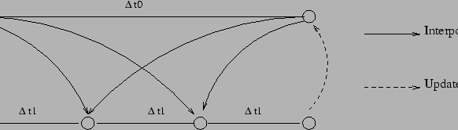 |
A recursive integration procedure manages the time evolution for the
child grids during the time step of the parent grids
(Figure 6). In order to preserve the CFL
criterion, for a typical
coefficient of refinement (say, a factor of 3 for a 5 km resolution
grid embedded in a 15 km grid), for each parent time step the child
must be advanced using a time step divided by the coefficient of
refinement as many time as necessary to reach the time of the parent
(Figure (6)). For simple 2-level embedding, the
procedure is as follows:
- Advance the parent grid by one parent time step.
- Interpolate the relevant parent variables in space and time
to get the boundary conditions for the child grid.
- Advance the child grid by as much child time steps as necessary
to reach the new parent model time.
- Update point by point the parent model by averaging the more
accurate values of the child model (in the case of 2-way embedding).
The recursive approach used in AGRIF
allows the specification of any number
of embedding level.
To run an embedded model, the user must provide the grid, the surface
forcing and the initial conditions. To name the different files,
AGRIF employs a specific strategy: if the parent file names are of
the form: XXX.nc, the first child names will be of the form:
XXX.nc.1, the second: XXX.nc.2, etc...
This convention is also applied for the "roms.in" input files.
A graphic user interface (NestGUI) facilitates the generation of
the different NetCDF files. Launch nestgui in the Matlab session
(in the /Roms_tools/Run/ directory):
nestgui
A window pops up, asking for a "PARENT GRID" NetCDF file
(Figure 7). In our Benguela test case, you should select
/Roms_tools/Run/ROMSFILES/roms_grd.nc (grid file) and click "open".
The main window appears (Figure 8).
Figure 7:
Entrance window of NestGUI
| 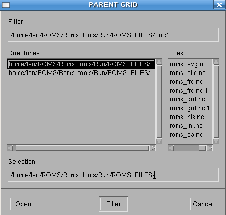 |
Figure 8:
The NestGUI main window
| 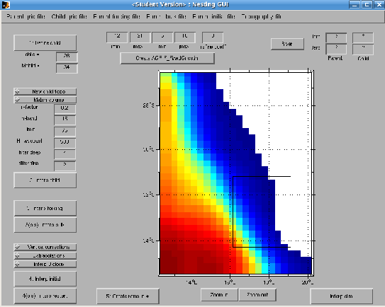 |
To generate the child model you should follow several steps:
- To define the child domain, click "Define child" and create
the child domain on the main window. The size of the grid child
(Lchild and Mchild) is now visible. This operation can be redone
until you are satisfied with the size and the position of the child
domain. The child domain can be finely tuned using the imin,
imax, jmin and jmax boxes.
Be aware that the mask interpolation from the parent grid
to the child grid is not optimal close to corners. Parent/Child
boundaries should be placed where the mask is showing a straight
coastline. A warning will be given during the interpolation
procedure if this is not the case.
- "Interp child" : It generates the child grid file. Before,
you should select if you are using a new topography
("New child topo" button) for the child
grid or if you are just interpolating the parent topography
on the child grid. In the first case, you should defines
what topography file will be used (e.g.
/Roms_tools/Topo/etopo2.nc or another dataset).
You should also define if you want the volume of the child grid
to match the volume of the parent close to the parent/child
boundaries ("Match volume" button, it should be "on" by default).
You should also define define the r factor (Beckmann and Haidvogel, 1993)
for topography smoothing ("r-factor", 0.25 is safe) and
the number of points to connect the child topography to the
parent topography ("n-band", it follows the relation
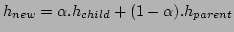,
where is going from 0 to 1 in "n-band" points
from the parent/child boundaries).
You should also select the child minimum depth ("Hmin",
it should be lower or equal to the parent minimum depth),
the maximum depth at the coast ("Hmax coast"), the
number of selective hanning filter passes for the deep
regions ("n filter deep") and the number of final
hanning filter passes ("n filter final").
- "Interp forcing": It interpolates the parent
surface forcing on the child grid. Select the parent forcing file
to be interpolated (e.g. /Roms_tools/Run/ROMSFILES/roms_frc.nc).
The child forcing file roms_frc.nc.1 will be created.
The parent surface fluxes are interpolated on the child grid.
You can use "Interp bulk" if you are using a bulk formula.
In this case, the parent bulk file
(e.g. /Roms_tools/Run/ROMSFILES/roms_blk.nc) will be
interpolated on the child grid.
- "Interp initial": It interpolates parent initial
conditions on the child grid. Select the parent initial file
(e.g. /Roms_tools/Run/ROMSFILES/roms_ini.nc).
The child initial file
(e.g. /Roms_tools/Run/ROMSFILES/roms_ini.nc.1)
will be created.
If the topographies are different between the parent and
the child grids, the child initial conditions are
vertically re-interpolated. In this case you should check
if the options "vertical corrections" and "extrapolations"
are selected.
"Interp biology" can be used to interpolate
parent biological variables for biogeochemical experiments.
"Interp restart" generates a child restart file from
a parent restart file
(e.g. /Roms_tools/Run/ROMSFILES/roms_rst.nc).
This can be done to "hot start" a child model after the
spin-up of the parent model.
- You can click on "Create roms.in.*" to generate a
child input file (roms.in.1) from the parent input
file and click on "Create AGRIF_FixedGrids.in" to
generate a AGRIF_FixedGrids.in file (the file which
defines the child grid position in the parent grid).
"river" can be used to locate the river on the coast.
"Interp clim" can be useful to generate boundary conditions
to test the child model alone.
The ROMS nesting procedure needs a Fortran 95 compiler. For Linux PCs,
the Intel Fortran Compiler (ifort) is available at
http://www.intel.com/software/products/compilers/flin/noncom.htm.
To be able to compile ROMS with ifort, you should change the corresponding
comments in jobcomp. Define AGRIF in
/Roms_tools/Run/cppdefs.h.
Other cpp keys are related to AGRIF:
- AGRIF_OBC_EAST : Open eastern boundary for the child grids.
- AGRIF_OBC_WEST : Open western boundary for the child grids.
- AGRIF_OBC_SOUTH : Open southern boundary for the child grids.
- AGRIF_OBC_NORTH : Open northern boundary for the child grids.
- AGRIF_STORE_BAROT_CHILD : Store ubar and vbar during the parent step for the
child boundary conditions.
- AGRIF_FLUX_BC : Apply parent/child barotropic boundary conditions has
fluxes.
- AGRIF_POLY_DUAVG : Apply a third order polynomial temporal interpolation
for DU_avg1 and DU_avg2.
- AGRIF_LOCAL_VOLCONS : Enforce parent-child mass conservation.
- AGRIF_OBC_M2FLATHER : Activate Flather open boundary conditions for ubar and vbar
for the child model .
- AGRIF_OBC_M2ORLANSKI : Activate 2D radiation open boundary conditions for ubar and vbar
for the child model.
- AGRIF_OBC_M2SPECIFIED : Activate specified open boundary conditions for ubar and vbar
for the child model.
- AGRIF_OBC_M2CHARACT : Activate open boundary conditions based on characteristic methods
for ubar and vbar
for the child model.
- AGRIF_OBC_M3ORLANSKI : Activate 2D radiation open boundary conditions for u and v
for the child model.
- AGRIF_OBC_M3SPECIFIED : Activate specified open boundary conditions for u and v
for the child model.
- AGRIF_OBC_M3CHARACT : Activate open boundary conditions based on characteristic methods
for u and v
for the child model.
- AGRIF_OBC_TORLANSKI : Activate 2D radiation open boundary conditions for tracers
for the child model .
- AGRIF_OBC_TUPWIND : Activate upwind open boundary conditions for tracers
for the child model.
- AGRIF_OBC_TSPECIFIED : Activate specified open boundary conditions for tracers
for the child model.
The default definitions should be sufficient for most of the applications.
It is possible to edit the file AGRIF_FixedGrids.in.
This file contains the child grid positions
(i.e. imin,imax,jmin,jmax) and coefficients of refinement. A first line
gives the number of children grids per parent (if AGRIF_STORE_BAROT_CHILD
is defined, only one child grid can be defined per parent grid). A second
line gives the relative position of each grid and the coefficient of refinement
for each dimension.
Edit the input files roms.in.1, roms.in.2 , etc... to define correctly the
file names and the time steps. To run the model, simply type at the prompt:
roms roms.in.
To visualize the ROMS model outputs for different grid levels,
change the value in the "child models" box
in roms_gui.
ROMSTOOLS can help for the design of ROMS biogeochemical
experiments. For the initial conditions and lateral boundary
conditions, WOA provides a seasonal climatology for nitrate
concentration and WOA or SeaWifs can be used to obtain a
seasonal climatology of surface chlorophyll concentration.
Phytoplankton is estimated by a constant chlorophyll/phytoplankton
ratio derived from previous simulations. Zooplankton is estimated
in a similar way. The part which should be edited by the user in
romstools_param.m is:
%%%%%%%%%%%%%%%%%%%%%%%%%%%%%%%
%
% Open boundaries and initial conditions parameters
% used by make_clim.m, make_biol.m, make_bry.m
%%%%%%%%%%%%%%%%%%%%%%%%%%%%%%%
%
% World Ocean Atlas directory (WOA2001 or WOA2005)
%
woa_dir=[ROMSTOOLS_dir,'WOA2005/'];
%
% Surface chlorophyll seasonal climatology (WOA2001 or SeaWifs)
%
chla_dir=[ROMSTOOLS_dir,'SeaWifs/'];
%
Variables description :
- woa_dir=[ROMSTOOLS_dir,'WOA2005/'] : Directory where the World Ocean
Atlas 2005 climatology (Conkright et al., 2002) is located. The World Ocean
Atlas 2001 climatology can also be used.
- chla_dir=[ROMSTOOLS_dir,'SeaWifs/'] : Directory of the surface
chlorophyll seasonal climatology.
Run make_biol in the Matlab session :
make_biol
You should obtain :
----------------------------------------
Add_no3: creating variables and attributes for the OA file
Add_no3: creating variables and attributes for the Climatology file
Ext tracers: Roa = 0 km - default value = NaN
Ext tracers: horizontal interpolation of the annual data
Ext tracers: horizontal interpolation of the seasonal data
time index: 1 of total: 4
time index: 2 of total: 4
time index: 3 of total: 4
time index: 4 of total: 4
Vertical interpolations
NO3...
Time index: 1 of total: 4
Time index: 2 of total: 4
Time index: 3 of total: 4
Time index: 4 of total: 4
CHla...
Add_chla: creating variable and attribute
...
Make a few plots...
----------------------------------------
The cpp keys related to biology:
- BIO_NChlPZD : Select a 5 components (Nitrate, Chlorophyll, Phytoplankton,
Zooplankton, Detritus) biogeochemical model.
- BIO_N2ChlPZD2 : Select a 7 components (Nitrate, Ammonium, Chlorophyll,
Phytoplankton, Zooplankton, Small Detritus, Large Detritus) biogeochemical model.
- BIO_N2P2Z2D2 : Select a 8 components (Nitrate, Ammonium, Small
Phytoplankton, Large Phytoplankton, Small Zooplankton, Large Zooplankton,
Small Detritus, Large Detritus) biogeochemical model.
- DIAGNOSTICS_BIO : Define if writing out fluxes between the biological
components.
An operating coastal modeling system can be designed following the
assumption that large scale offshore dynamics are slow in comparison
to the coastal system. The lateral boundary conditions are interpolated
from the last available ECCO model outputs and are kept constant during
the ROMS simulation. ECCO model outputs are delayed by about two to four
weeks, but we suppose that they are still relevant for the present large
scale oceanic structure. The Global Forecast System (GFS) is used for the
surface forcing. A first day of simulation is run in hindcast mode. This
will provide the initial conditions for the next simulated day.
Using GFS as surface forcing and ECCO for the lateral boundary conditions,
a forecast of 7 days is conducted. A UNIX C-Shell script
( /Roms_tools/Run/run_roms_forecast.csh) manages
data downloading, the hindcast and forecast simulations
and datas storage.
The script run_roms_forecast.csh starts Matlab in
batch mode to download
with OPENDAP the lateral boundary conditions from ECCO and
the surface forcing from GFS. It interpolates the data on ROMS
grid and launches the hindcast and the forecast runs.
The script run_roms_forecast.csh should be edited to change the
directory pathways (HOME, RUNDIR, PATH, LD_LIBRAIRY_PATH, MATLAB,...).
The ROMS input files /Roms_tools/Run/roms_hindcast.in and
/Roms_tools/Run/roms_forecast.in should also be edited to change
the length of the time step and the number of time steps.
The ROMS input file roms_hindcast.in should be defined such as
the hindcast run duration
is 1 day and a restart file is generated at the end of the hindcast run.
The script run_roms_forecast.csh can be relaunched everyday in batch mode
using crontab.
-
Beckmann, A., Haidvogel, D.B.,
1993.
Numerical simulation of flow around a tall
isolated seamount. Part I: Problem formulation
and model accuracy.
Journal of Physical Oceanography
23,
1736-1753.
-
-
Blanke, B., Roy, C., Penven, P., Speich, S.,
McWilliams, J.C., Nelson, G.,
2002.
Linking wind and upwelling interannual variability in a
regional model of the southern Benguela,
Geophysical Research Letters
29,
2188-2191.
-
-
Blayo, E., Debreu, L.,
1999.
Adaptive mesh refinement for finite-difference
ocean models: First experiments.
Journal of Physical Oceanography
29,
1239-1250.
-
-
Carton, J.A., Giese, B.S., Grodsky, S.A., 2005.
Sea level rise and the warming of the oceans in the
Simple Ocean Data Assimilation (SODA) ocean reanalysis.
Journal of Geophysical Research
110, C09006, doi:10.1029/2004JC002817.
-
-
Casey, K.S., Cornillon, P., 1999.
A comparison of satellite and in situ based
sea surface temperature climatologies.
Journal of Climate
12, 1848-1863.
-
-
Conkright, M.E., R.A. Locarnini, H.E. Garcia, T.D. O Brien,
T.P. Boyer, C. Stephens, J.I. Antonov, 2002.
World Ocean Atlas 2001: Objective Analyses, Data Statistics,
and Figures, CD-ROM Documentation.
National Oceanographic Data Center,
Silver Spring, MD,
17 pp.
-
-
Da Silva, A.M., Young, C.C., Levitus, S.
1994.
Atlas of surface marine data 1994,
Vol. 1,
algorithms and procedures,
NOAA Atlas NESDIS 6,
U. S. Department of Commerce,
NOAA,
NESDIS,
USA,
74 pp.
-
-
Debreu, L.,
2000.
Raffinement adaptatif de maillage et méthodes de zoom -
application aux modèles d'océan,
2000,
Ph.D. thesis,
Université Joseph Fourier,
Grenoble.
-
-
Debreu, L., Blayo, E.,
2003.
AGRIF: Adaptive Grid Refinement In Fortran.
submitted to ACM Transactions on Mathematical Software - TOMS.
-
-
Debreu, L., Vouland, C.,
2003.
AGRIF: Adaptive Grid Refinement In Fortran.
[Available online http://www-lmc.imag.fr/IDOPT/AGRIF/index.html].
-
-
Di Lorenzo, E., Miller, A.J., Neilson, D.J.,
Cornuelle, B.D., Moisan, J.R.,
2003.
Modeling observed California Current mesoscale eddies and
the ecosystem response .
International Journal of Remote Sensing,
in press.
-
-
Egbert, G., Erofeeva, S., 2002.
Efficient inverse modeling of barotropic ocean tides,
Journal of Atmospheric and Oceanic Technology
19,
183-204.
-
-
Flather, R.A., 1976.
A tidal model of the northwest European continental shelf.
Mémoires de la Société Royale des Sciences de Liège,
10,
141-164.
-
-
Haidvogel, D.B., Arango, H.G., Hedstrom, K. , Beckmann, A.,
Malanotte-Rizzoli, P., Shchepetkin, A.F.,
2000.
Model Evaluation Experiments in the North Atlantic Basin:
Simulations in Nonlinear Terrain-Following Coordinates.
Dynamics of Atmospheres and Oceans
32 ,
239-281.
-
-
Haney, R.L.,
1991.
On the pressure force over steep
topography in sigma coordinate ocean models.
Journal of Physical Oceanography
21,
610-619.
-
-
Jackett, D.R., McDougall, T.J.,
1995.
Minimal Adjustment of Hydrostatic Profiles to
Achieve Static Stability.
Journal of Atmospheric and Oceanic Technology
12,
381-389.
-
-
Large, W.G., McWilliams, J.C., Doney, S.C.,
1994.
Oceanic vertical mixing: a review and a model
with a nonlocal boundary layer parameterization.
Reviews in Geophysics
32,
363-403.
-
-
MacCready, P. M., R. D. Hetland, W. R. Geyer,
Long-Term Isohaline Salt Balance in an Estuary.
Continental Shelf Research, 22, 1591-1601.
-
-
Marchesiello, P., McWilliams, J.C., Shchepetkin, A.,
2001.
Open boundary condition for long-term integration of regional oceanic
models.
Ocean Modelling
3,
1-21.
-
-
Marchesiello, P., McWilliams, J.C., Shchepetkin, A.,
2003.
Equilibrium structure and dynamics of the California Current System.
Journal of Physical Oceanography
33,
753-783.
-
-
Penven, P., Roy C., Lutjeharms, J.R.E.,
Colin de verdière, A., Johnson, A., Shillington, F.,
Fréon, P., Brundrit, G.,
2001.
A regional hydrodynamic model of the Southern Benguela.
South African Journal of Science
97,
472-476.
-
-
Penven, P., Debreu, L., Marchesiello, P., McWilliams, J.C.,
2006.
Application of the ROMS embedding procedure for the Central
California Upwelling System.
Ocean Modelling
12, 157-187.
-
-
Penven, P., Marchesiello, P., Debreu, L., Lefèvre, J.,
2007.
Software tools for pre- and post-processing of oceanic regional
simulations.
Environmental Modelling and Software,
in press.
-
-
Reynolds, R.W., Smith, T.M., 1994.
Improved global sea surface temperature
analyses using optimum interpolation.
Journal of Climate.
7, 929-948.
-
-
Shchepetkin, A.F., McWilliams, J.C.,
1998.
Quasi-monotone advection schemes based on explicit locally
adaptive dissipation.
Monthly Weather Review
126,
1541-1580.
-
-
Shchepetkin, A.F., McWilliams, J.C.,
2003.
A method for computing horizontal pressure-gradient force
in an ocean model with a non-aligned vertical coordinate.
Journal of Geophysical Research
108.
-
-
Shchepetkin, A.F., McWilliams, J.C.,
2005.
Regional Ocean Model System: a split-explicit ocean model with a
free-surface and topography-following vertical coordinate.
Ocean Modelling
9, 347-404.
-
-
Smith, W.H.F., Sandwell, D.T.,
1997.
Global seafloor topography from satellite altimetry and ship depth soundings.
Science
277,
1957-1962.
-
-
Stammer, D., Davis, R., Fu, L.L., Fukumori, I., Giering, R., Lee, T.,
Marotzke, J., Marshall, J., Menemenlis, D., Niiler, P., Wunsch, C.,
Zlotnicki., V., 1999.
The consortium for estimating the circulation and
climate of the ocean (ECCO) - Science goals and task plan - Report
N1.
Techical report,
Jet Propulsion Laboratory - Massachusetts Institute of
Technology - Scripps Institution of Oceanography.
-
This document was generated using the
LaTeX2HTML translator Version 2002-2-1 (1.70)
Copyright © 1993, 1994, 1995, 1996,
Nikos Drakos,
Computer Based Learning Unit, University of Leeds.
Copyright © 1997, 1998, 1999,
Ross Moore,
Mathematics Department, Macquarie University, Sydney.
The command line arguments were:
latex2html -split 0 -white -show_section_numbers -no_navigation doc.tex
The translation was initiated by Pierrick Penven on 2007-08-30
Pierrick Penven
2007-08-30